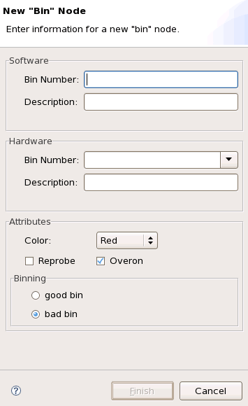
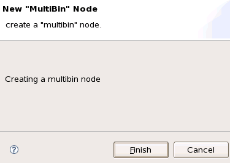
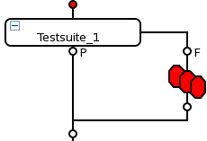

Inserting a bin into the testflow
About this task
This topic describes the following methods on how to insert a bin into the testflow:
- Insert a bin in the Flow Sequence Editor and then use the Flow Data Editor or the Properties view to edit its parameters.
- Insert a floating bin in the Flow Data Editor and use this bin to create a multibin.
For a test suite including several tests, the DUTs must be sorted into different bins according to the test results. The multibin feature helps you to insert multiple software and hardware bins for a test suite.
Multibins
Use the multibin feature in the testflow to allow multiple or flexible bin and test number assignments. For more information on the usage of all kinds of bins, see Use of bins with multisite tests.
Before you begin
The Testflow Tool is open and the testflow has been loaded.
Procedures
Stop bin
- In the Flow Sequence Editor, select an insertion point where you want to insert a bin and click goodbin or badbin on the Palette.
- The New Bin Node window for a stop bin (Good Bin or Bad Bin) opens.

- Enter the settings of the bin in the appropriate text boxes according to the description in the Bins page.
- Click Finish.
The bin node appears in the testflow.
If necessary, edit the bin parameters on the Bins page of the Flow Data Editor.
In a normal test floor situation, you normally, do not want too many physical (hardware) bins, however, for the purpose of better differentiation of DUT performance, statistical analysis and monitoring of your production, you may wish to have extra bins (soft bins) which you can then associate with your few physical bins. For this purpose you define "Soft" bins and "Hard" bins and associate them with each other via the bin numbers in the "Software" and "Hardware" windows. The number of "Soft" bins will always be more (or equal to) the number of "Hard" bins.
Note that it is not possible to add bins whose settings conflict with bin settings that already exist in the testflow. Two bins are considered to conflict if the SBin attribute is the same and any of the attributes listed below, except Notes, is different (empty attributes are ignored).
Otherwise bin
Each testflow includes an otherwise bin by default. This bin is displayed with a cyan background at the bottom line of the Bins page. You can edit its settings.
Multibin
- Insert a floating bin:
- On the Bins page of the Flow Data Editor, right-click and select Add
Bin.
The New Bin Node window opens.
- Configure the bin, see Bins page.
- Click Finish.
The floating bin is displayed with a gray background on the bottom of the Bins page.
- On the Bins page of the Flow Data Editor, right-click and select Add
Bin.
- Define the multibin setting using the floating bins.
- In the Flow Sequence Editor, select the insertion point where you want to insert the multibin.
- On the Palette, click Multi Bin.
The New MultiBin Wizard window opens.

- Click Finish.
The multibin appears in the testflow sequence.

- You can choose any combination of the floating bins as a multibin. The bins are defined in
the test method code using the
SET_MULTIBINAPI.Note The bin selected in the test method must be defined in your testflow or in a test table (see Working with test tables or TestTable). If the bin, selected by SET_MULTIBIN, does not exist, the multibin object will bin to the otherwise bin.
Results
The bin has been inserted in the testflow.
Example
This test method example shows how to define multibins for multisite testing.
[..]
bool passed=true;
ON_FIRST_INVOCATION_BEGIN();
CONNECT();
FUNCTIONAL_TEST();
ON_FIRST_INVOCATION_END();
if (!TESTSET().cont(true).judgeAndLog_FunctionalTest())
//Functional results are cached for each site by the API
{SET_MULTIBIN("abc", 12);
//The devices which fail at the first functional test fall in bin 12.
passed = false;
}
[..]
return;
Functional changes
- Introduced before SmarTest 6.3.2
- SmarTest 6.5.2: Stop bins are inserted with the Flow Sequence Editor.
- SmarTest 6.5.2: Each testflow includes an otherwise bin by default.
- SmarTest 6.5.2: Floating bins are inserted with the Flow Data Editor. They are used for multibin.